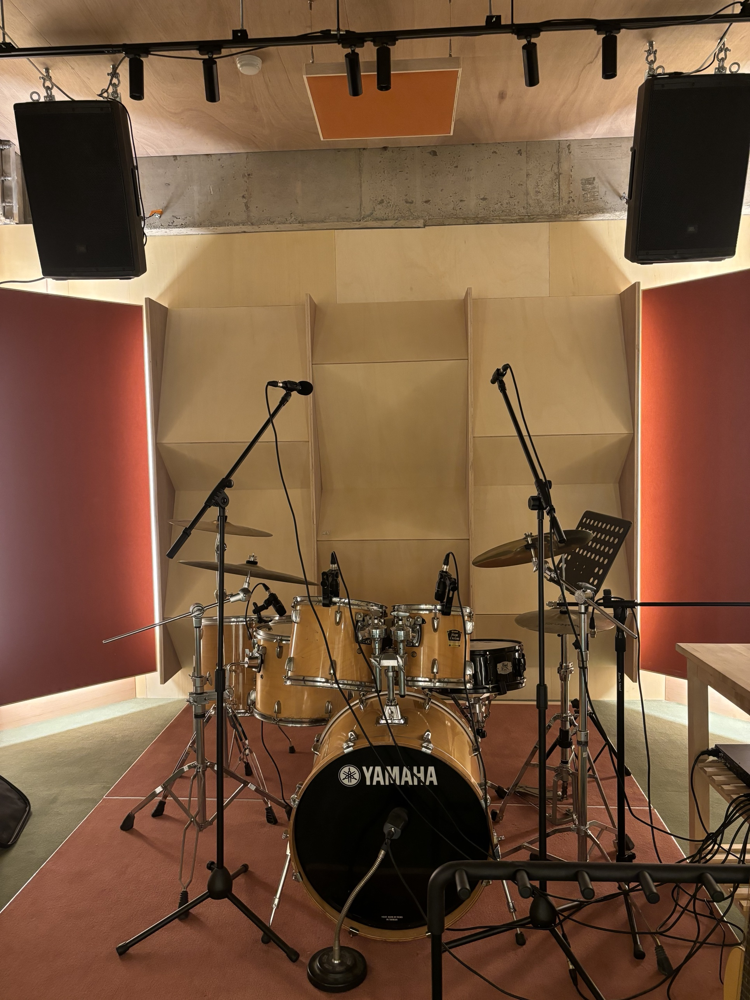
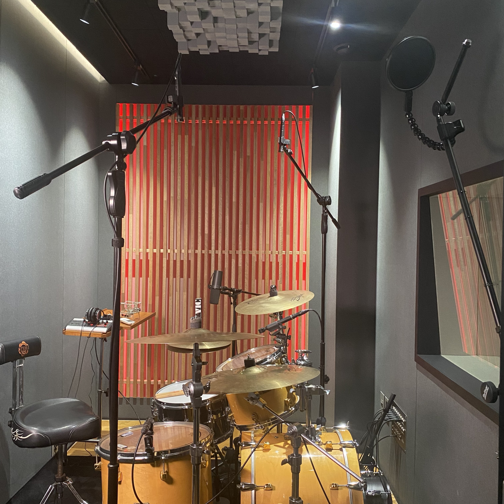
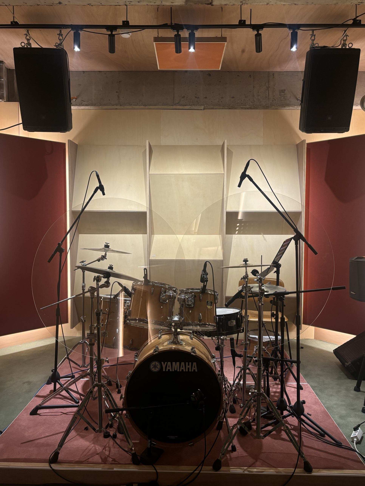
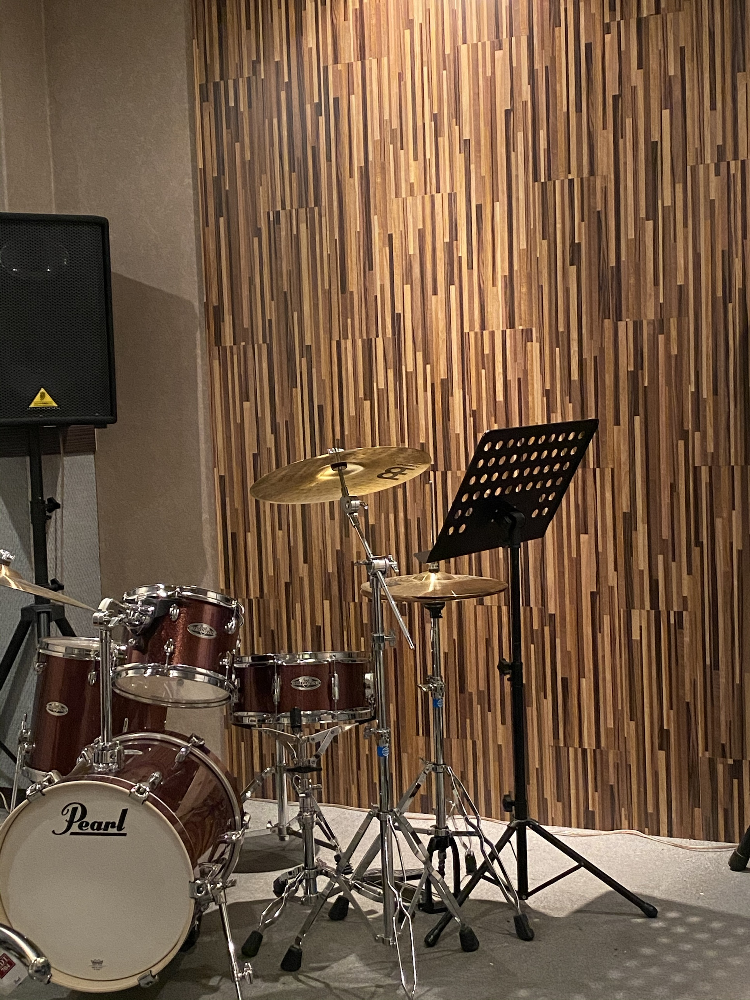
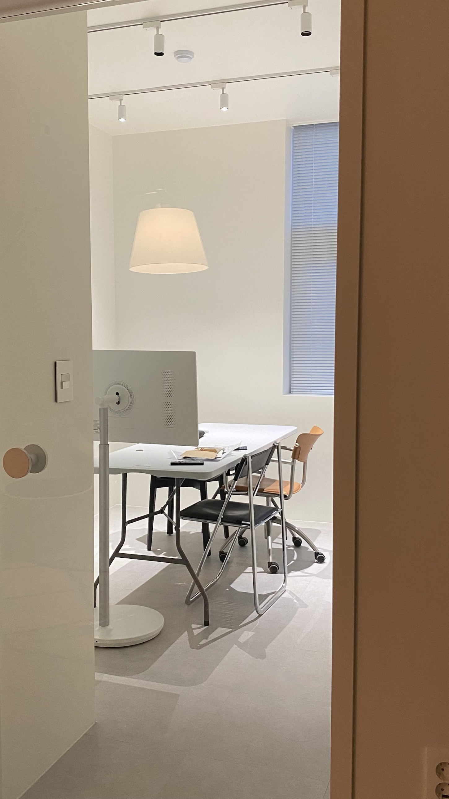

ENOCH MUSIC ACADEMY01 / 08
REAL DRUM
시흥 드럼학원,
리얼 드럼으로 배우는 이유

ENOCH MUSIC ACADEMY02 / 08
E-DRUM vs REAL DRUM
전자드럼이
나쁜 건 아니에요

ENOCH MUSIC ACADEMY03 / 08
DYNAMICS
세게, 여리게.
그 사이가 들려요

ENOCH MUSIC ACADEMY04 / 08

ENOCH MUSIC ACADEMY05 / 08
STAGE
무대와 시험장에 놓인 건,
대부분 리얼 드럼

ENOCH MUSIC ACADEMY06 / 08

ENOCH MUSIC ACADEMY07 / 08

ENOCH MUSIC ACADEMY08 / 08
은행동 · 은계에서
드럼학원 찾고 계신다면
에녹실용음악학원 시흥점 · 경기도 시흥시 은행로 157 2층 · 031 315 3666